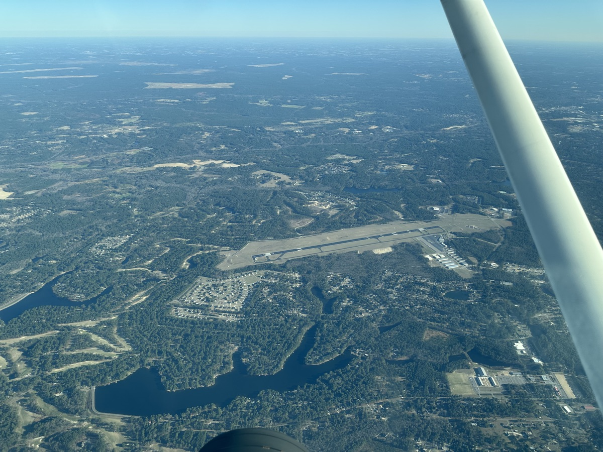
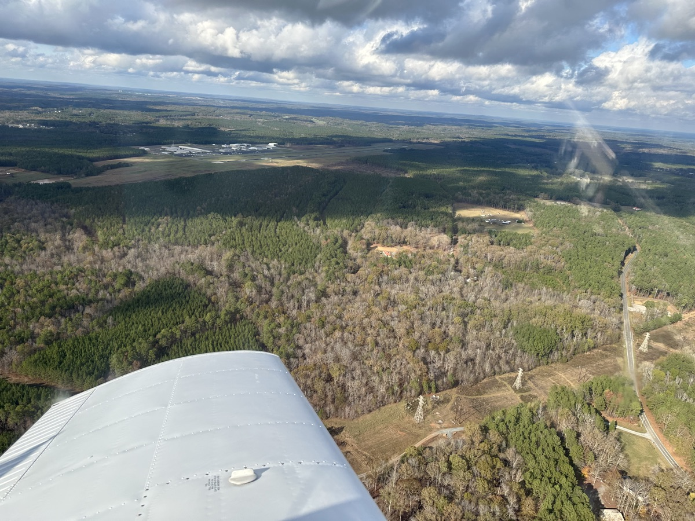
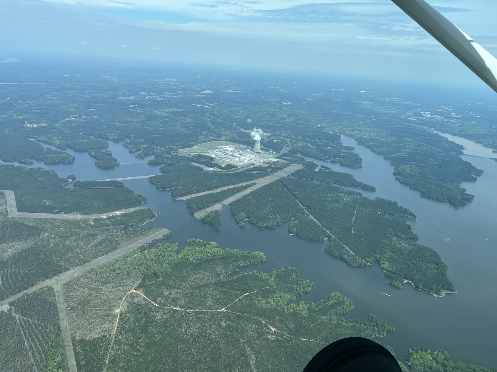
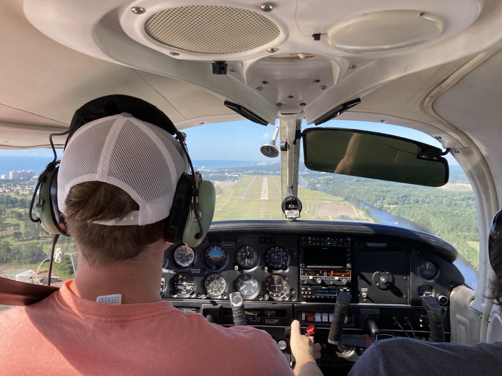
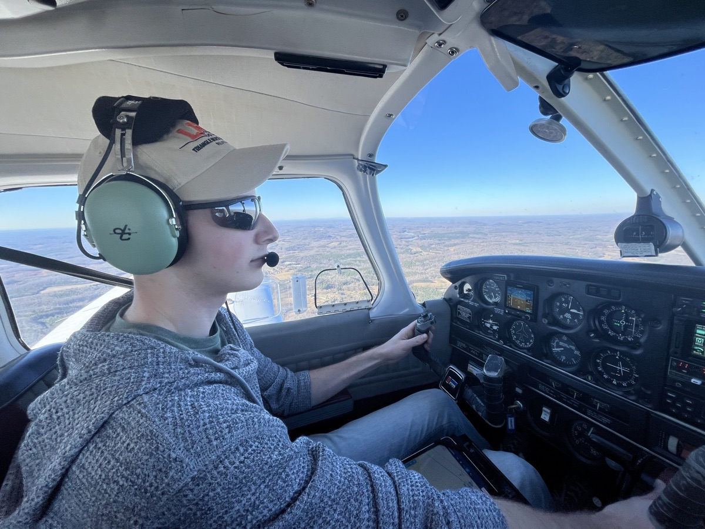
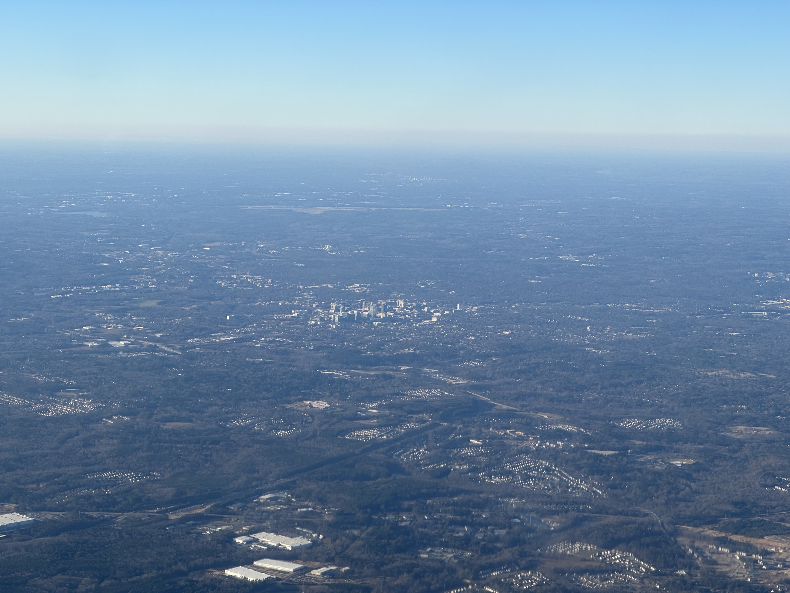
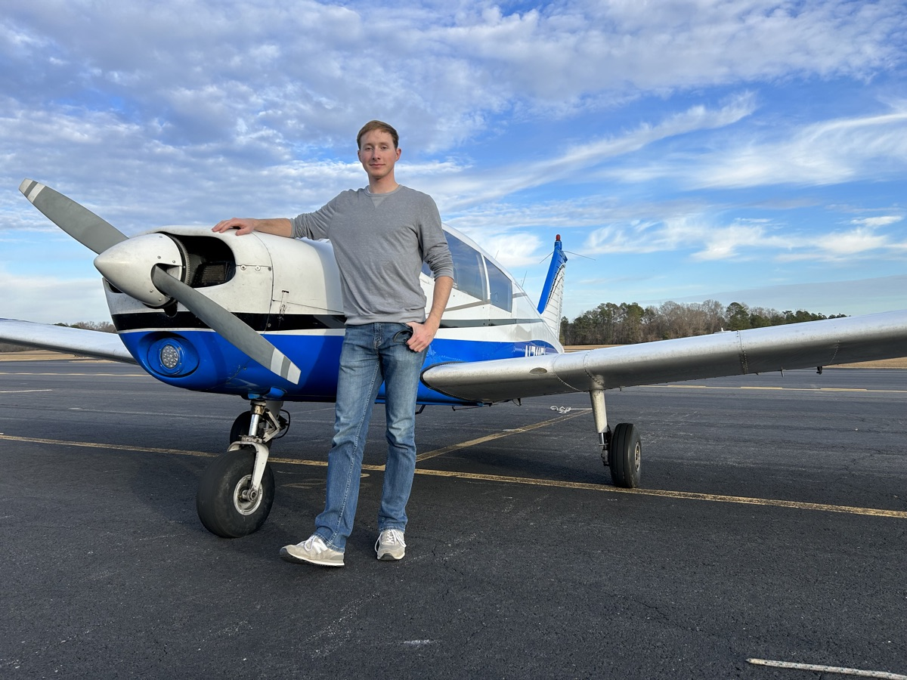

From the Ground Up
As a kid, a common question is, "if you could have a superpower, what would it be?" For me, that has always been the ability to fly. It's one thing I've wanted to do since I was a kid. In March 2011, I was fortunate enough to be taken up in a family friend's airplane—my first peek into general aviation. Ever since, I knew I would have to pursue a pilot's license at some point in my life.
That's not something I really knew much about beforehand, though. I had assumed it worked much like a driver's license; get it and you can fly around without much restriction. But it was only upon starting my aviation journey in March 2022 that I started to see how much there really was to this.
I never realized how long it would take. Students are told they can get their license in as little as two to four months, but mine took well over a year. I got my private pilot license on May 8, 2023. During that time, I had three different instructors and accrued 90 hours of flight time. Although I was ready for my checkride around 65 hours, I had to wait for two months before the DPE had an appointment time for me.
It's one thing to learn how to steer an airplane; it's another to learn the rules of the air.
Outside of flight training, I read numerous books, taking notes and memorizing rules and procedures. I learned more about airplane engines than I'll ever learn about cars. Meteorology became a serious field of study. Being a pilot isn't just about knowing how to take off and land; it's about having a total understanding of every flight.







Flying South over the Moore County Airport (KSOP) near Southern Pines. Fort Bragg can be seen in the distance.